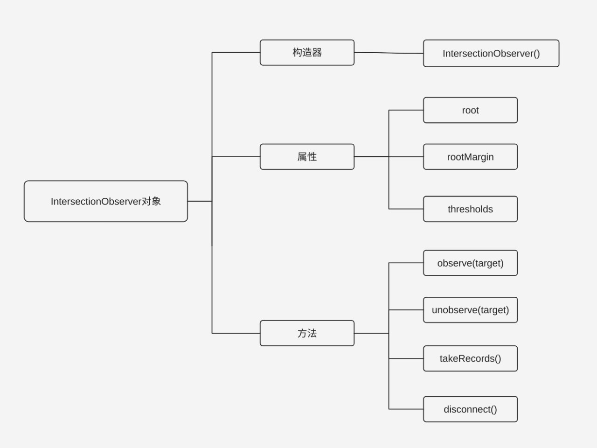
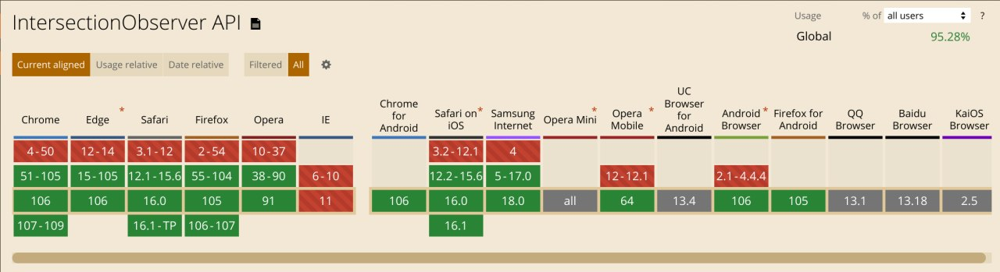

图片懒加载
图片懒加载
什么是图片懒加载
通常情况下，HTML终端图片资源会自上而下依次加载，但对于含有大量图片资源的网站，会采用“按需加载”的方式，也就是当图片资源出现在视口区域内才会被加载，可以大大节省网站的浏览，这种技术就是图片懒加载技术。
基本原理
主要通过监听图片资源容器是否出现在视口区域内，来决定图片资源是否被加载。
早期实现
- 给目标元素指定一张占位图，将真实的图片链接存储在自定义属性中，通常是
data-src。 - 监听与用户滚动行为相关的
scroll事件（使用节流的思想） - 在
scroll事件处理程序中利用Element.getBoundingRect()方法判断目标元素与视口的交叉状态。 - 当目标元素与视口的交叉状态大于0时，将真实的图片链接赋给目标元素的
src属性或者backgroundImage属性。
1 | |
Intersection Observer API 实现
Intersection Observer API提供了一种异步检测目标元素与祖先元素或viewport相交情况变化的方法。
基本介绍
Intersection Observer API 是异步实现的，它不会随着目标元素的滚动而同步触发，而是通过requestIdleCallback()实现，即只有浏览器空闲下来，才会执行观察器。这意味着这个观察期的优先级非常低。
早期实现中，相交检测通常要用到事件监听，并且需要频繁调用 Element.getBoundingClientRect() 方法以获取相关元素的边界信息。事件监听和调用 Element.getBoundingClientRect() 都是在主线程上运行，因此频繁触发、调用可能会造成性能问题。这种检测方法极其怪异且不优雅。
因此官方就提出了Intersection Observer API，该 API 的出现就是为了高效的解决以下两大类问题：
- 某个元素是否可见：
- 图片懒加载——当图片滚动到可见时才进行加载
- 内容无限滚动——当用户滚动到接近底部时直接加载更多，而无需翻页，给用户一种网页可以无限滚动的错觉
- 两个元素是否相交：
- 检测广告的曝光情况——为了计算广告收益，需要知道广告元素的曝光情况
- 在用户看见某个区域时执行任务或播放动画
IntersectionObserver()构造器
IntersectionObserver()构造器用于创建一个 IntersectionObserver 对象，并会将该对像进行返回。

基本语法
1 | |
参数和返回值
IntersectionObserver()构造器的参数有：
-
callback(必选参数)—当交叉比超过指定阈值触发回调函数，此函数可接受两个参数：
-
entries：由IntersectionObserverEntry对象组成的数组 但每个被触发的阈值，都或多或少与指定阈值有偏差。 -
observer：返回被调用的IntersectionObserver实例。
-
-
options(可选参数) —用于配置回调函数触发的条件，该对象有三个参数：
root：指定根元素。用于检查目标的可见性。如果指定为 null，也为浏览器视口。且必须是目标元素的父级元素。默认为浏览器视口rootMargin：根元素的扩缩边距。与 CSS 中margin一样，用于控制根元素每一边的扩缩，从而控制计算根元素和目标元素的交集的区域范围，默认值为 0threshold：阈值，回调函数触发的条件。取值范围为 0.0-1.0。当传入数值类型时，只会触发一次。当传入数组类型时，可触发多次。如：[0,0.25,0.5,0.75,1]表示目标元素在根元素的可见程度每多 25% 就执行一次回调。默认值为 0.0
IntersectionObserver()构造器的返回值：
IntersectionObserver对象。
方法
-
observe(target)开始监听指定目标元素 -
unobserve(target)停止监听指定的目标元素 -
takeRecords()返回所有观察目标的IntersectionObserverEntry对象数组 -
disconnect()使IntersectionObserver对象停止全部监听工作
IntersectionObserverEntry对象
target：返回目标元素，表示目前该对象正监听的元素isIntersecting：返回一个布尔值，目标元素刚出现在根元素可视区时返回true；目标元素从根元素可视区消失为false；以上两种情况都会触发callback函数boundingClientRect：返回目标元素的矩形区域的信息，返回结果与element.getBoundingClientRect()相同。rootBounds：返回根元素的矩形区域的信息，即getBoundingClientRect()方法的返回值，如果没有根元素（即直接相对于视口滚动），则返回null。intersectionRect：返回目标元素与视口（或根元素）的交叉区域的信息。intersectionRatio：返回目标元素的可见比例，即intersectionRect占boundingClientRect的比例，完全可见时为 1，完全不可见时小于等于 0。time：返回一个记录从IntersectionObserver的时间原点到交叉被触发的时间的时间戳。
Intersection Observer API 的兼容性

参考资料
本博客所有文章除特别声明外，均采用 CC BY-SA 4.0 协议 ，转载请注明出处！